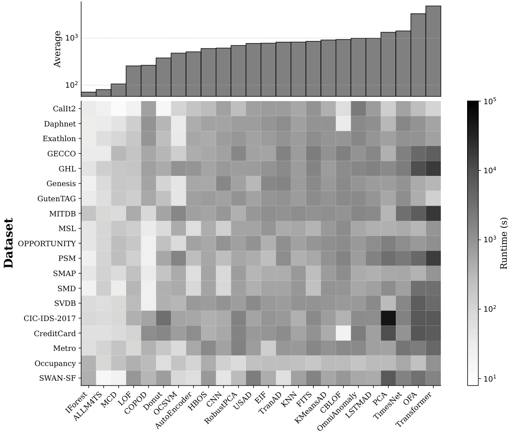

📝 Abstract
Anomaly detection in multivariate time series is essential across domains such as healthcare, cybersecurity, and industrial monitoring, yet remains fundamentally challenging due to high-dimensional dependencies, the presence of cross-correlations between time-dependent variables, and the scarcity of labeled anomalies. We introduce mTSBench, the largest benchmark to date for multivariate time series anomaly detection and model selection, consisting of 344 labeled time series across 19 datasets from a wide range of application domains. We comprehensively evaluate 24 anomaly detectors, including the only two publicly available large language model-based methods for multivariate time series. Consistent with prior findings, we observe that no single detector dominates across datasets, motivating the need for effective model selection. We benchmark three recent model selection methods and find that even the strongest of them remains far from optimal. Our results highlight the outstanding need for robust, generalizable selection strategies.
💡 Contributions
- We introduce mTSBench, the largest and most comprehensive MTS-AD and model selection benchmark to date, featuring 344 labeled multivariate time series from 19 datasets across 12 application domains. mTSBench systematically evaluates 24 anomaly detection methods, including the only LLM-based methods for MTS-AD, reflecting their performance in multivariate settings with real-world temporal dependencies and cross-signal interactions.
- Our empirical analysis reveals that, among the evaluated methods, no single anomaly detection method performs consistently well across datasets in mTSBench, underscoring the need for adaptive selection strategies. To this end, mTSBench is the first to integrate unsupervised model selection methods and benchmark their effectiveness across diverse time series contexts and under consistent settings.
- To drive reproducible comparisons, mTSBench introduces a unified evaluation suite with point-based and ranking-based metrics for anomaly detection and model selection. Using this standardized setup, we observe substantial gaps between the evaluated unsupervised model selection methods and both optimal and trivial baselines. These results highlight limitations of current unsupervised selection strategies and underscore the need for more adaptive model selection mechanisms.
Detectors in mTSBench
Anomaly Detection Methods in mTSBench encompassing a diverse range of techniques, including foundation models, distance-based, forecasting-based, and reconstruction-based approaches, ensuring a comprehensive representation of different methodological paradigms.
📊 Detectors Performance

Average AUC-ROC Performance of 24 Anomaly Detection Methods (x-axis) Evaluated Across 19 mTSBench Datasets (y-axis). The substantial performance variability across datasets highlights the need for robust model selection strategies. mTSBench benchmarks the capabilityof model selection techniques to systematically identify the optimal anomaly detection method among 24 state-of-the-art detectors evaluated on a comprehensive collection of 344 multivariate time series.

Boxplots summarize the performance of anomaly detection methods across all mTSBench datasets using five evaluation metrics: VUS-PR, VUS-ROC, AUC-PR, AUC-ROC, and AUC-PTRT. Methods are ordered by their average VUS-PR score. Boxes indicate interquartile ranges, with the solid line denoting the median and the dashed line denoting the mean.
Average runtime of anomaly detection methods evaluated on mTSBench. Each bar reports the mean runtime of a detector aggregated over all 344 multivariate time series in the benchmark.
Selectors in mTSBench
Comparison between model selection methods supported by mTSBench and those available in existing anomaly detection benchmarks for multivariate time series. Methods span foundation models, deep learning, classical machine learning, and other approaches such as statistical and data mining techniques.
📊 Selectors Performance
Ranking Comparison of Model Selection Methods. (Left) Precision@3, Recall@3, and NDCG@3 for each method. (Right) Recall@k as a function of k.
BibTeX
@article{zhou2026mTSBench,
title={mTSBench: Benchmarking Multivariate Time Series Anomaly Detection and Model Selection at Scale},
author={Zhou, Xiaona and Brif, Constantin and Lourentzou, Ismini},
journal={TMLR},
year={2026}
}